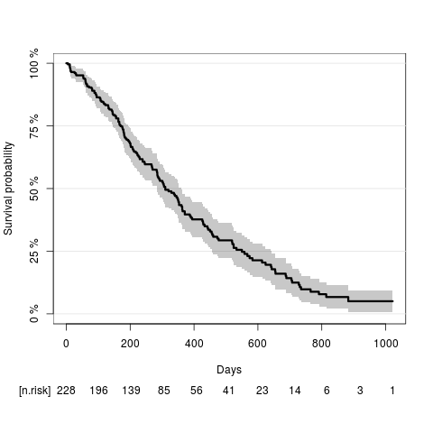
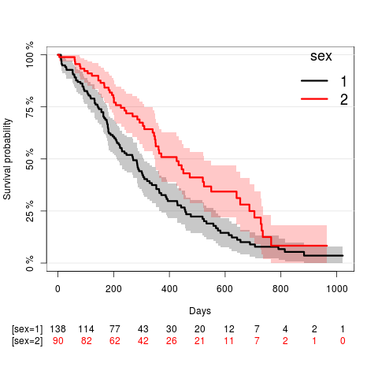
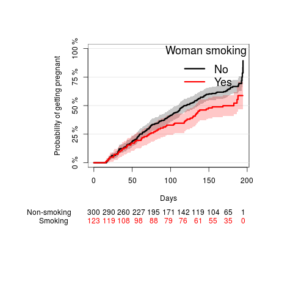
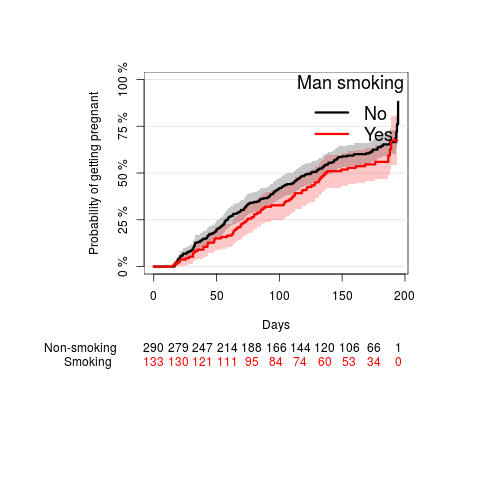

Basic statistics exercises (survival analysis)
Table of Contents
Tutorial
Lung cancer data
Load the data "lung" from the survival package.
- Create a new status variable that fits to the standard coding 0 for censored and 1 for event (death).
- Compute the Kaplan-Meier estimate of the overall survival curves and plot the results.
- Read-off the median survival time from the graph.
- Compute the Kaplan-Meier estimate of the survival curves in strata defined by patients gender and visualize the results
- Use a Cox regression model to assess if the survival chances are gender dependent.
- State the findings in a sentence using hazard ratio with 95% confidence interval and the corresponing p-value.
- Adjust the results for patient age and revise the result sentence
Create a new status variable
library(survival) library(prodlim) library(data.table) data(lung) setDT(lung) lung[,Status:=as.numeric(status==2)]
Univariate Kaplan-Meier
Compute the Kaplan-Meier estimate of the overall survival curves and plot the result:
library(prodlim) KaplanMeierEst = prodlim(Surv(time,Status)~1,data=lung) plot(KaplanMeierEst,xlab="Days")

quantile(KaplanMeierEst)
X11cairo
2
Quantiles of the event time distribution based on the method.
Table of quantiles and corresponding confidence limits:
q quantile lower upper
1 0.00 NA NA NA
2 0.25 550 457 643
3 0.50 310 284 361
4 0.75 170 145 197
5 1.00 5 5 11
Median time (IQR):310.00 (170.00;550.00)
According to the Kaplan-Meier estimate the median survival time (95% confidence limits) is 310 days (284;361).
stratified Kaplan-Meier
Compute the Kaplan-Meier estimate of the survival curves in strata defined by patients gender and visualize the result:
KaplanMeierEstStrata = prodlim(Surv(time,Status)~sex,data=lung) plot(KaplanMeierEstStrata,xlab="Days",confint=TRUE)

Univariate Cox regression
Use a Cox regression model to assess if the survival chances are gender dependent:
coxfit = coxph(Surv(time,Status)~sex,data=lung) summary(coxfit)
X11cairo
2
Call:
coxph(formula = Surv(time, Status) ~ sex, data = lung)
n= 228, number of events= 165
coef exp(coef) se(coef) z Pr(>|z|)
sex -0.5310 0.5880 0.1672 -3.176 0.00149 **
---
codes: 0 ‘***’ 0.001 ‘**’ 0.01 ‘*’ 0.05 ‘.’ 0.1 ‘ ’ 1
exp(coef) exp(-coef) lower .95 upper .95
sex 0.588 1.701 0.4237 0.816
Concordance= 0.579 (se = 0.022 )
Rsquare= 0.046 (max possible= 0.999 )
Likelihood ratio test= 10.63 on 1 df, p=0.001
Wald test = 10.09 on 1 df, p=0.001
Score (logrank) test = 10.33 on 1 df, p=0.001
lung$Sex <- factor(lung$sex,levels=c("1","2"),labels=c("Male","Female")) lung$Sex <- relevel(lung$Sex,"Female") coxfit = coxph(Surv(time,Status)~Sex,data=lung) publish(coxfit,org=TRUE)
| Variable | Units | HazardRatio | CI.95 | p-value |
|---|---|---|---|---|
| Sex | Female | Ref | ||
| Male | 1.70 | [1.23;2.36] | 0.00149 |
State the findings in a sentence using hazard ratio with 95% confidence interval and the (Wald test) p-value.
The survival chances were significantly lower for men as compared to women (hazard ratio: 1.7; 95% confidence interval: [1.2;2.4]; Wald test p-value: 0.001).
Age-adjusted Cox regression
coxfit.adj = coxph(Surv(time,Status)~Sex+age,data=lung)
publish(coxfit.adj,org=TRUE)
| Variable | Units | HazardRatio | CI.95 | p-value |
|---|---|---|---|---|
| Sex | Female | Ref | ||
| Male | 1.67 | [1.20;2.32] | 0.00218 | |
| age | 1.02 | [1.00;1.04] | 0.06459 |
Cox regression adjusted for age showed that the survival chances were significantly lower for men as compared to women (hazard ratio: 1.67; 95% confidence interval: [1.2;2.32]; Wald test p-value: 0.002).
Time to pregnancy data
Load the ttp data.
- Analyse the effect of smoking (separately for the woman and the man) on the time-to-pregnancy with Kaplan-Meier curves.
- Test the smoking effect with a simple Cox regression model. Write a conclusion sentence which includes the hazard ratio and the corresponding confidence interval and p-value.
- Study the interaction of the smoking status of the woman and the smoking status of the man on the time to pregancy. In this model, what is the hazard ratio between a non-smoking couple and a couple where both partners smoke?
- Analyse the effect of the woman's alcohol drinking behaviour (''alcWoman'') in a Cox regression analysis. Write a conclusion sentence which includes the hazard ratio and confidence limits.
- Categorize the number of beverages per week into three groups:
- group 1 (''no''): 0 drinks
- group 2 (''moderate''): 1-10 drinks
- group 3 (''high''): 11 or more drinks
Then analyse the effect of this three group variable on the time to pregnancy. Write conclusion sentences which include pairwise comparisons in terms of hazard ratios of all three groups.
- Adjust the previous analysis of alcohol effect for possible confounding by smoking and revise the results.
- Adjust the previous analysis of alcohol effect for possible confounding by sperm concentration and revise the results. Find possible explanations for why the results differ from the univariate analysis.
Effect of smoking (KaplanMeier & logRank)
woman smoking
par(mar=c(10,10,5,5)) fw <- prodlim(Surv(ttp,status)~smokeWoman,data=ttp) plot(fw, type="cuminc", ylab="Probability of getting pregnant", legend.title="Woman smoking", atrisk.title="Woman smoking", legend.x="topleft", atrisk.at=seq(0,200,50), atrisk.pos=-20, xlab="Days")

logRankWoman <- survdiff(Surv(ttp,status)~smokeWoman,data=ttp) publish(logRankWoman,org=TRUE)
X11cairo
2
Log-rank test N Observed Expected squared(O-E)/E squared(O-E)/V
smokeWoman=No 300.00 194.00 176.46 1.74 5.64
smokeWoman=Yes 123.00 62.00 79.54 3.87 5.64
Chisq= 5.6 on 1 degrees of freedom, p= 0.0176
The chance of getting pregnant was significantly higher when the woman was not smoking compared to when the woman was smoking (Log-rank p-value: 0.0176).
man smoking
par(mar=c(10,10,5,5)) fm <- prodlim(Surv(ttp,status)~smokeMan,data=ttp) plot(fm, type="cuminc", ylab="Probability of getting pregnant", legend.x="topleft", legend.title="Man smoking", atrisk.title="Man smoking", atrisk.at=seq(0,200,50), atrisk.pos=-20, xlab="Days")

logRankMan <- survdiff(Surv(ttp,status)~smokeMan,data=ttp) publish(logRankMan,org=TRUE)
X11cairo
2
Log-rank test N Observed Expected squared(O-E)/E squared(O-E)/V
smokeMan=No 290.00 183.00 172.31 0.66 2.04
smokeMan=Yes 133.00 73.00 83.69 1.37 2.04
Chisq= 2 on 1 degrees of freedom, p= 0.1536
The chance of getting pregnant was higher when the man was not smoking compared to when the man was smoking (see Kaplan-Meier plot), however, this difference was not statistically significant (Log-rank p-value: 0.1536).
Univariate Cox regression
coxWoman <- coxph(Surv(ttp,status)~smokeWoman,data=ttp) publish(coxWoman,org=TRUE)
| Variable | Units | HazardRatio | CI.95 | p-value |
|---|---|---|---|---|
| smokeWoman | No | Ref | ||
| Yes | 0.71 | [0.53;0.94] | 0.0182 |
Smoking of the woman decreased the hazard and hence increased the time to pregnancy significantly (hazard ratio=0.71, 95%-CI=[0.53;0.94], p=0.018).
coxMan <- coxph(Surv(ttp,status)~smokeMan,data=ttp) publish(coxMan,org=TRUE)
| Variable | Units | HazardRatio | CI.95 | p-value |
|---|---|---|---|---|
| smokeMan | No | Ref | ||
| Yes | 0.82 | [0.63;1.08] | 0.154 |
Smoking of the man did not significantly increase the time to pregnancy (hazard ratio=0.82, 95%-CI=[0.63;1.08], p=0.15).
Interaction
coxInter <- coxph(Surv(ttp,status)~smokeMan*smokeWoman,data=ttp,x=TRUE) summary(coxInter)
Call:
coxph(formula = Surv(ttp, status) ~ smokeMan * smokeWoman, data = ttp,
x = TRUE)
n= 423, number of events= 256
coef exp(coef) se(coef) z Pr(>|z|)
smokeManYes -0.1178 0.8889 0.1869 -0.630 0.5285
smokeWomanYes -0.3695 0.6911 0.2192 -1.686 0.0918 .
smokeManYes:smokeWomanYes 0.1210 1.1287 0.3209 0.377 0.7061
---
codes: 0 ‘***’ 0.001 ‘**’ 0.01 ‘*’ 0.05 ‘.’ 0.1 ‘ ’ 1
exp(coef) exp(-coef) lower .95 upper .95
smokeManYes 0.8889 1.125 0.6162 1.282
smokeWomanYes 0.6911 1.447 0.4497 1.062
smokeManYes:smokeWomanYes 1.1287 0.886 0.6018 2.117
Concordance= 0.536 (se = 0.017 )
Rsquare= 0.015 (max possible= 0.999 )
Likelihood ratio test= 6.31 on 3 df, p=0.1
Wald test = 6.01 on 3 df, p=0.1
Score (logrank) test = 6.07 on 3 df, p=0.1
publish(coxInter,org=TRUE)
| Variable | Units | HazardRatio | CI.95 | p-value |
|---|---|---|---|---|
| smokeMan(No): smokeWoman(Yes vs No) | 0.69 | [0.45;1.06] | 0.0918 | |
| smokeMan(Yes): smokeWoman(Yes vs No) | 0.78 | [0.49;1.23] | 0.2892 | |
| smokeWoman(No): smokeMan(Yes vs No) | 0.89 | [0.62;1.28] | 0.5285 | |
| smokeWoman(Yes): smokeMan(Yes vs No) | 1.00 | [0.60;1.67] | 0.9902 |
There is no significant effect modification. The hazard ratio for non-smoking couples compared to smoking couples is:
exp(coef_1 + coef_2 + coef_3) = exp(-0.1178-0.3695+0.121)= 0.8889 * 0.6911 * 1.1287 = 0.693
This is similar to the hazard ratio for smoking woman compared to non-smoking woman when the man is not smoking:
exp(coef_2) = exp(0.3695)= 0.6911
The p-value is 0.7061.
We can obtain the comparison between both smoking and none smoking by
including the variable coupleSmoking (which has 4 levels):
publish(coxph(Surv(ttp,status)~coupleSmoking,data=ttp),org=TRUE)
| Variable | Units | HazardRatio | CI.95 | p-value |
|---|---|---|---|---|
| coupleSmoking | none | Ref | ||
| woman only | 0.69 | [0.45;1.06] | 0.0918 | |
| man only | 0.89 | [0.62;1.28] | 0.5285 | |
| both | 0.69 | [0.49;0.99] | 0.0428 |
Effect of alcohol (Cox regression)
Continuous alcohol variable
coxDrink <- coxph(Surv(ttp,status)~alcWoman,data=ttp) publish(coxDrink,org=TRUE)
| Variable | Units | HazardRatio | CI.95 | p-value |
|---|---|---|---|---|
| alcWoman | 0.98 | [0.95;1.01] | 0.132 |
The effect of alcohol is not statistically significant (p=0.132) but this model assumes that the relation between a unit change of alcohol drinking behaviour (1 more beverage per week) and the hazard ratio is linear. This assumption may be violated.
ttp[,drinkWoman:=factor(cut(alcWoman,c(-1,0,10,100)),labels=c("no","moderate","high"))] coxDrink2 <- coxph(Surv(ttp,status)~drinkWoman,data=ttp) publish(coxDrink2,org=TRUE)
| Variable | Units | HazardRatio | CI.95 | p-value |
|---|---|---|---|---|
| drinkWoman | no | Ref | ||
| moderate | 0.73 | [0.55;0.95] | 0.0214 | |
| high | 0.53 | [0.32;0.89] | 0.0163 |
The probability of pregnancy is significantly lower for women drinking moderately as compared to women not drinking (hazard ratio: 0.73, 95%-CI: [0.55;0.95], p-value: 0.021) and for women drinking excessively as compared to women not drinking (hazard ratio: 0.53, 95%-CI: [0.32;0.89], p-value: 0.016).
The comparison of excessively to moderate is obtained by using relevel:
ttp$drinkWoman2 <- relevel(ttp$drinkWoman,"moderate") coxDrink3 <- coxph(Surv(ttp,status)~drinkWoman2,data=ttp) publish(coxDrink3,org=TRUE)
| Variable | Units | HazardRatio | CI.95 | p-value |
|---|---|---|---|---|
| drinkWoman2 | moderate | Ref | ||
| no | 1.38 | [1.05;1.81] | 0.0214 | |
| high | 0.73 | [0.45;1.19] | 0.2121 |
The probability of pregnancy is estimated as being lower, but not statistically significantly lower, for women drinking excessively as compared to women drinking moderately (hazard ratio: 0.73, 95%-CI: [0.45;0.95], p-value: 0.21).
Adjusted analyses
coxDrink4 <- coxph(Surv(ttp,status)~drinkWoman+smokeWoman,data=ttp) publish(coxDrink4,org=TRUE)
| Variable | Units | HazardRatio | CI.95 | p-value |
|---|---|---|---|---|
| drinkWoman | no | Ref | ||
| moderate | 0.76 | [0.58;1.00] | 0.0477 | |
| high | 0.55 | [0.33;0.92] | 0.0240 | |
| smokeWoman | No | Ref | ||
| Yes | 0.74 | [0.55;0.98] | 0.0381 |
After adjusting for smoking the results are similar as above.
coxDrink5 <- coxph(Surv(ttp,status)~drinkWoman+spermConc,data=ttp) publish(coxDrink5,org=TRUE)
| Variable | Units | Missing | HazardRatio | CI.95 | p-value |
|---|---|---|---|---|---|
| drinkWoman | no | 0 | Ref | ||
| moderate | 0.68 | [0.51;0.91] | 0.00952 | ||
| high | 0.47 | [0.27;0.83] | 0.00881 | ||
| spermConc | 113 | 1.00 | [1.00;1.01] | < 0.001 |
After adjusting for sperm concentration the results become more significant and the hazard ratios for group comparisons are more extreme. The reasons are
- sperm concentration is an important factor which when omitted leads to a systematic underestimation of effects. Like in logistic regression, this occurs even if the variable of interest (i.e. the drinking behavior of the woman) is independent of the factor (i.e. the sperm concentration).
- sperm concentration is missing for 113 of the men. The default behavior of the software is to remove all the data of all couples where the sperm concentration is missing. This changes the data set quite a lot and there may be a selection bias.